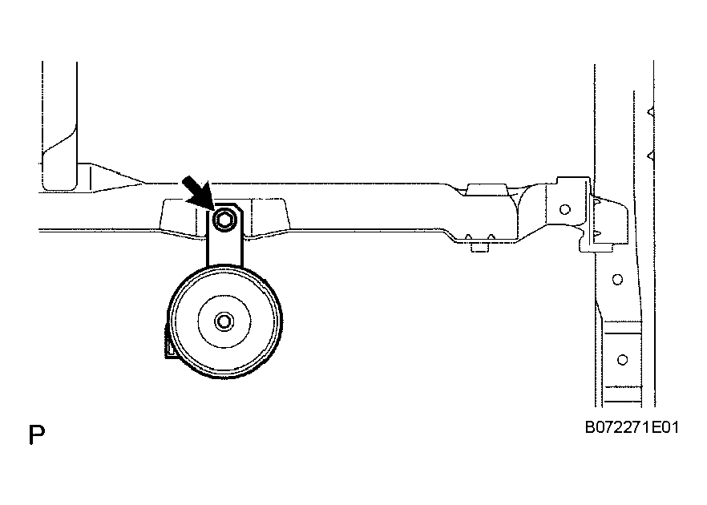

Low Pitched Horn: Installation
INSTALL LOW PITCHED HORN
Attach the horn stay to the body panel and then install the horn with the bolt.
Torque: 19.5 N*m (199 kgf*cm, 14 ft.*lbf)
Connect the horn connector.
Fig 1: Installing Low Pitched Horn

Courtesy of © TOYOTA, LICENSE AGREEMENT TMS1002